Three briefs from recruitment processes, each solved against the clock. They are not work for these brands; they show how I combine Midjourney, Stable Diffusion, Firefly and Photoshop, and how long each step takes.
- Briefs
- Poster, web banner, digital content
- Fastest
- 42 min, brief to final
- Type
- Recruitment exercises
01 · Heineken · PosterRecruitment exercise · not commissioned by the brand

HeinekenPoster
Brief to final0:0042 min in total
Midjourney, Photoshop
Amazing bottom view photo of a green Heineken bottle of beer on the beach sand. In the background a beach and very blue sky with some clouds. Depth field. Green caustics [Advertising style] --ar 9:16 --oref [bottle reference] --ow 50 --stylize 120 --v 7.0
--orefThe real bottle as an omni reference.--ow 50Omni weight, to control the bottle’s position.--stylize 120Started at 1000; too much detail, so it came down.
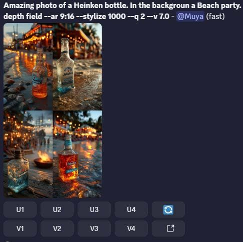
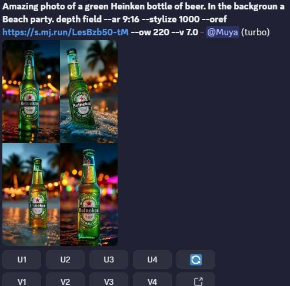
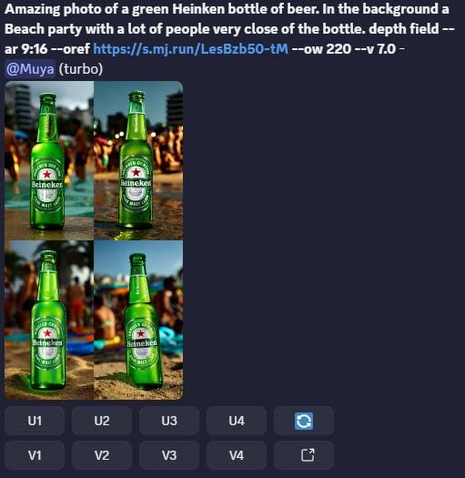
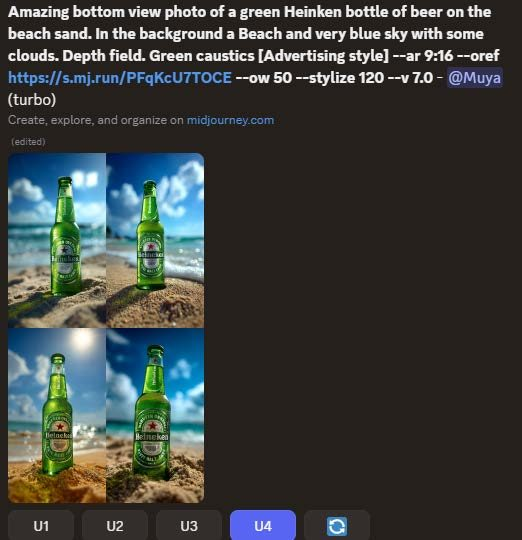
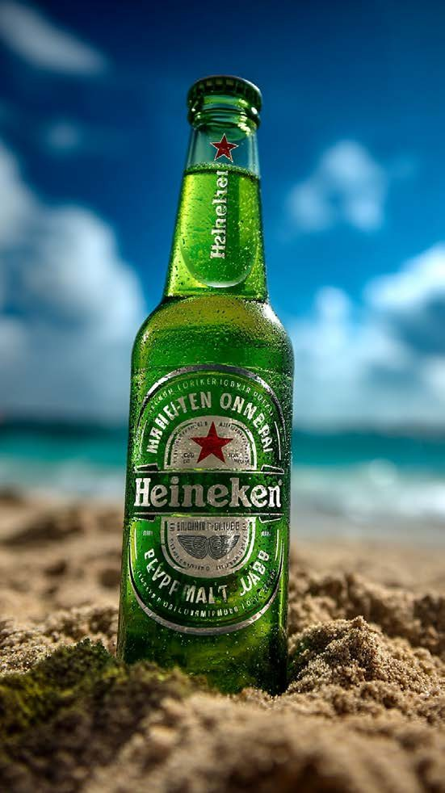
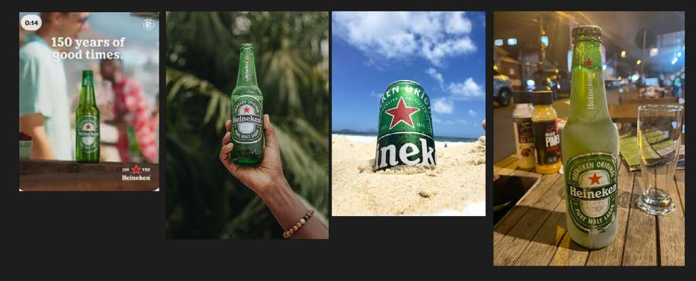
02 · Nissan · Web bannerRecruitment exercise · not commissioned by the brand

NissanWeb banner
Brief to final0:001 h 07 min in total
Stable Diffusion, Midjourney, Photoshop
Product parked, behind an incredible night city landscape. The floor is wet. The night is very cinematic. — negative: bad quality, low quality, person, people, human
IC-LightRelights the product to match the new background.SD 1.5Older model, less precise, but right for this job.MidjourneyPrompt auto-generated from the image, then used to rebuild the scene.
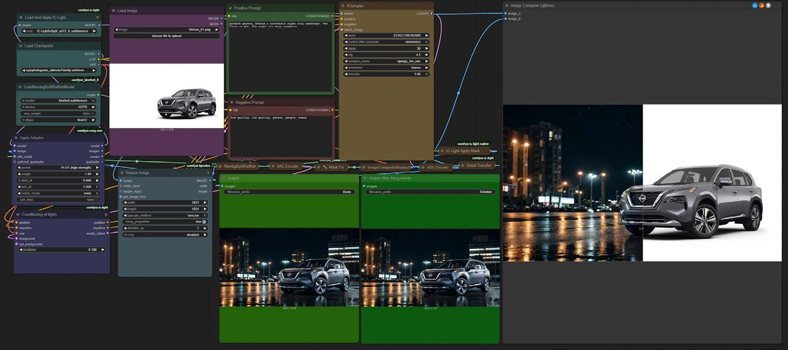
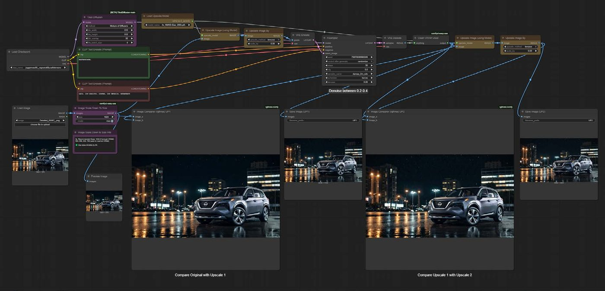
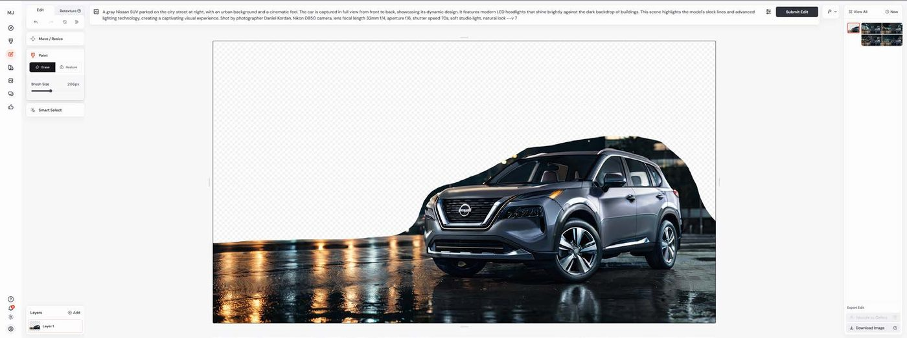
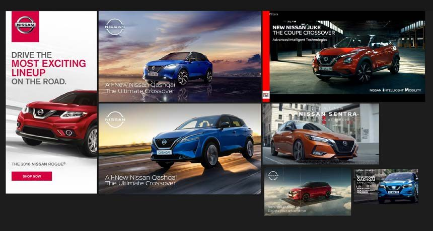
03 · Rimmel London · Digital contentRecruitment exercise · not commissioned by the brand
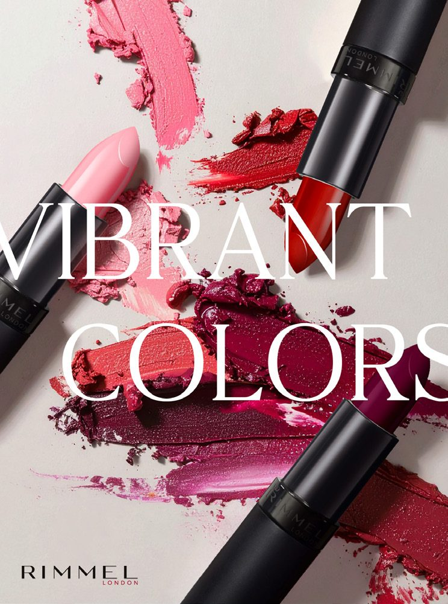
Rimmel LondonDigital content
Brief to final0:001 h 15 min in total
Midjourney, Firefly, Photoshop
A close-up photograph of the top view of three different lipsticks, one in pink and red shades, another with a dark purple color, lying on their sides and scattered around with smears of lipstick color. The background is a plain gray. Soft lighting creates gentle shadows to highlight details like sheen or shine.
Style refMidjourney image for look and texture.Composition refReal product photo for placement.45 minHand retouching to put the real product in.
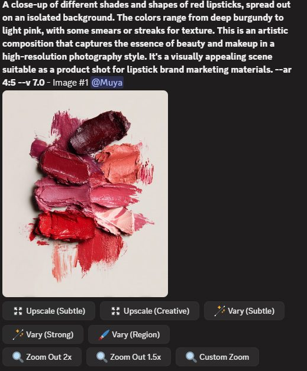
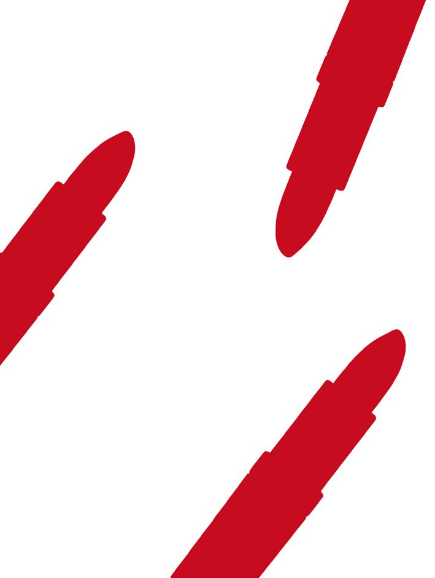
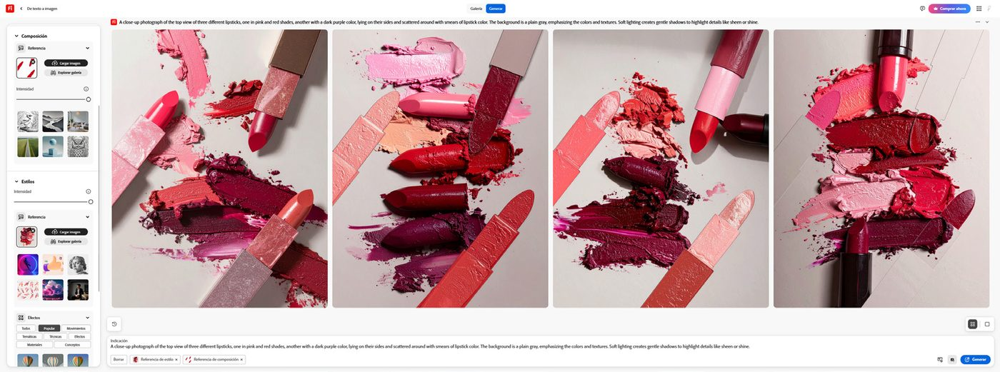
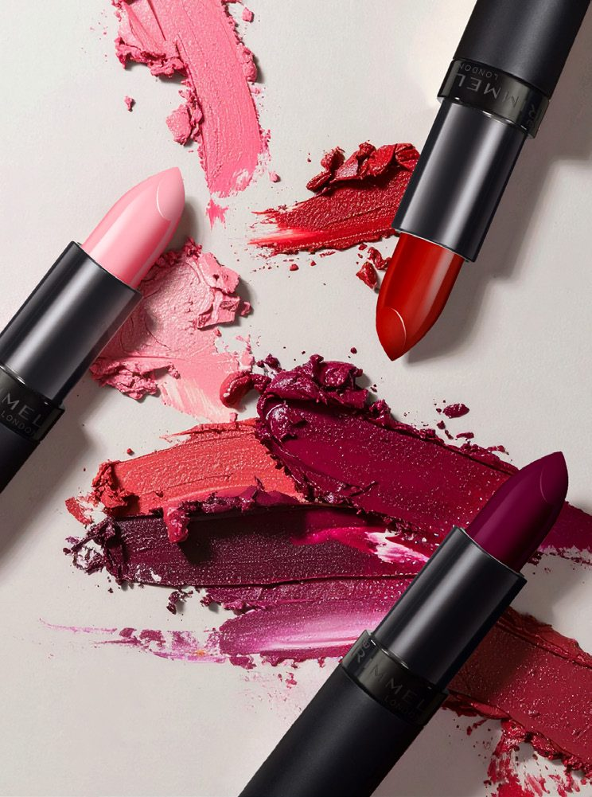
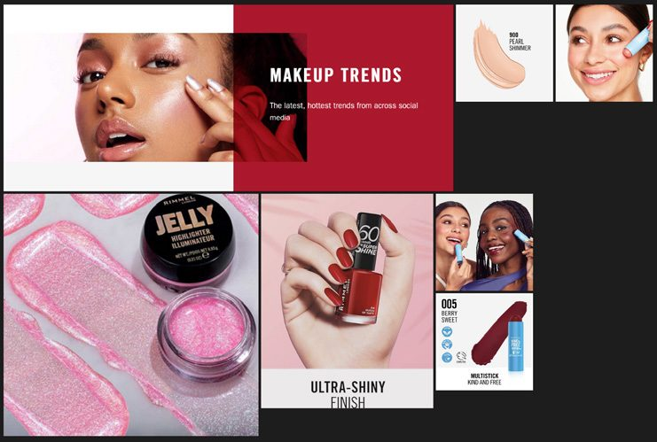
Next project
CampoBet →

© 2026 Rodrigo Lópezrodrigo.lopez.1293@gmail.com